Accueil clair : titre, consigne fournisseur et stockage local visibles ; capsule et onglets entièrement au-dessus du geste système.
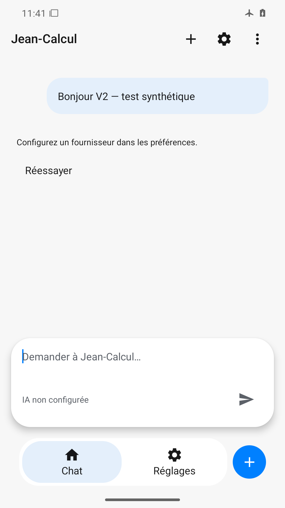
Message utilisateur synthétique affiché ; état non configuré et Réessayer explicites, aucune bulle entrante inventée. Capsule vide conservée.
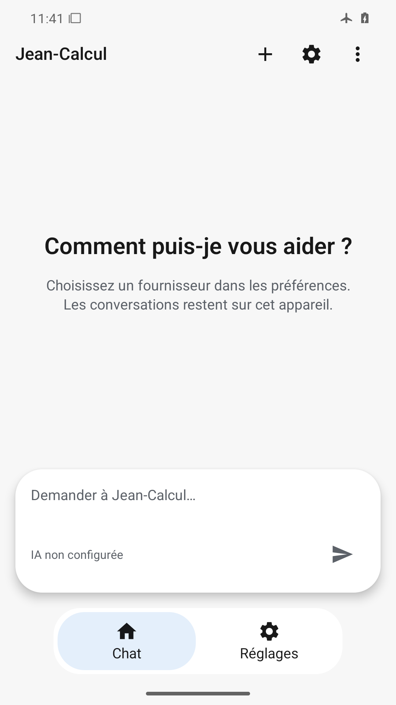
Effacement confirmé : ancien message absent, accueil et indication de saisie restaurés ; navigation Chat active.
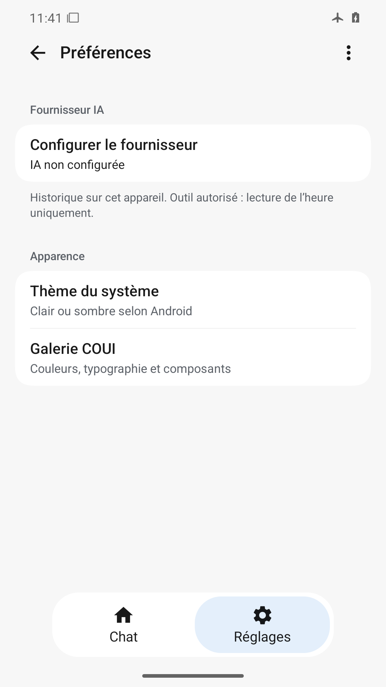
Réglages compacts : action Configurer le fournisseur, état IA non configurée, politique horloge et apparence lisibles. Le formulaire est replié, galerie visible.
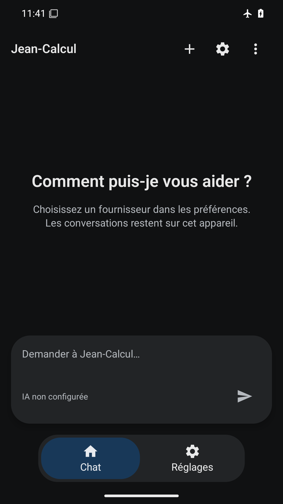
Fond quasi noir, carte de saisie sombre, textes et icônes clairs contrastés ; onglet Chat bleu sombre distinct.
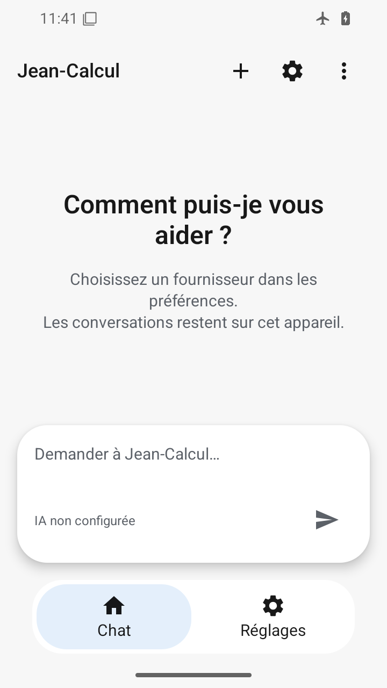
Écran 360×640 dp : titre sur deux lignes et description lisibles, capsule/envoi/navigation sans chevauchement ni débordement horizontal.
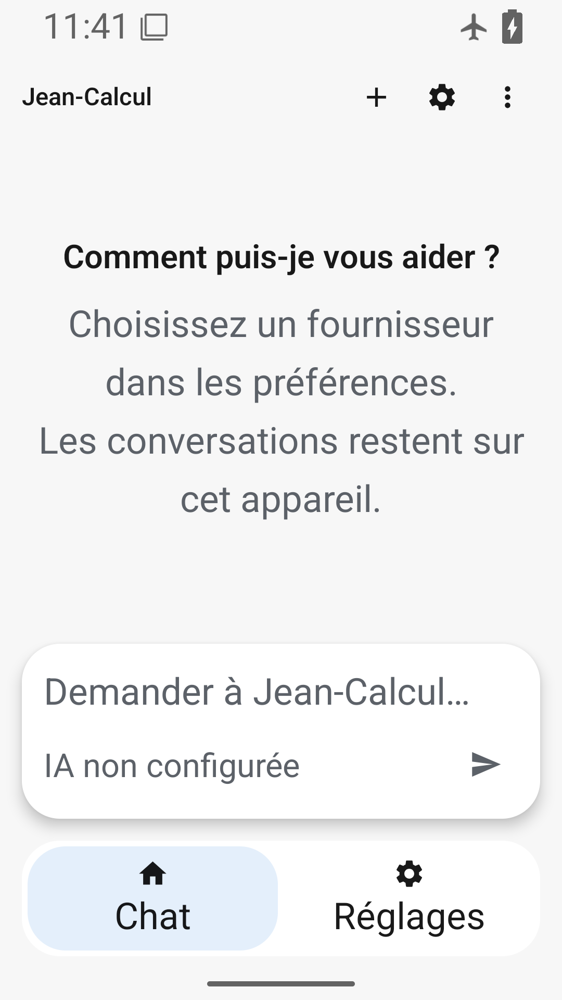
200 % : corps et navigation agrandis, retours à la ligne sans superposition ; placeholder abrégé, titre COUI encore visible et à taille fixe (alpha7).
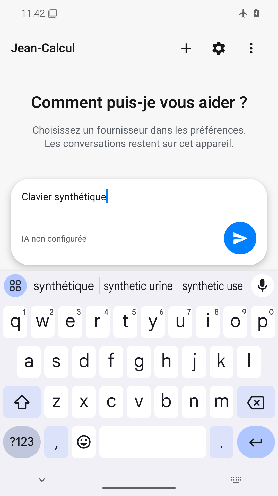
Clavier présent ; brouillon, curseur et envoi restent dégagés au-dessus de l’IME. En-tête et trois actions vérifiés aussi dans inspection/keyboard-header.png ouvert nativement.
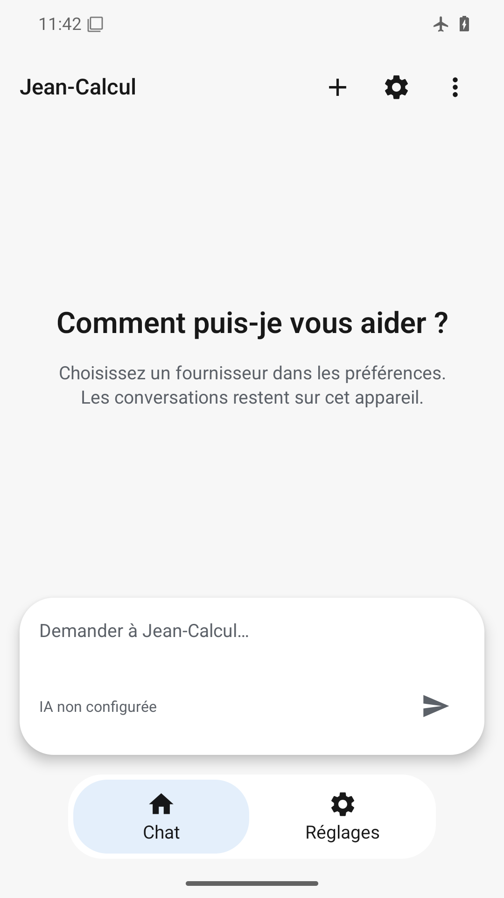
Capture stable avec animations désactivées : accueil, capsule et onglets lisibles ; la capture ne mesure ni fluidité ni retour tactile.
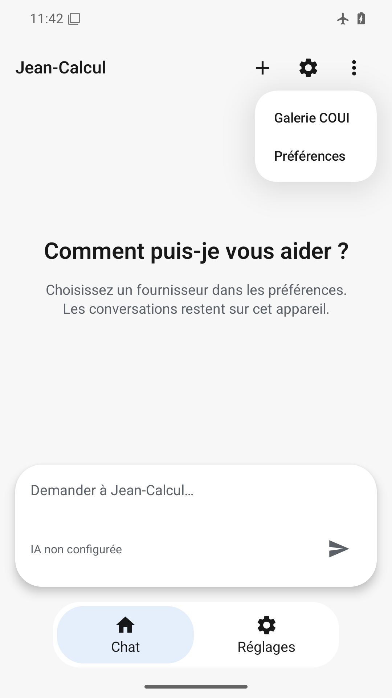
Menu natif COUI avec Galerie COUI et Préférences lisibles, ancré en haut à droite, saisie non recouverte.
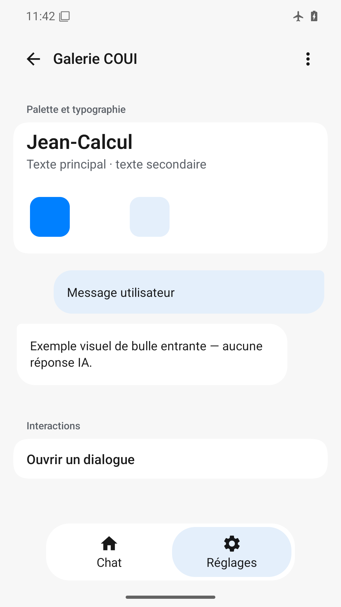
Carte typographique, palette et deux bulles illustratives distinctes ; dialogue accessible dans la zone visible, navigation séparée.
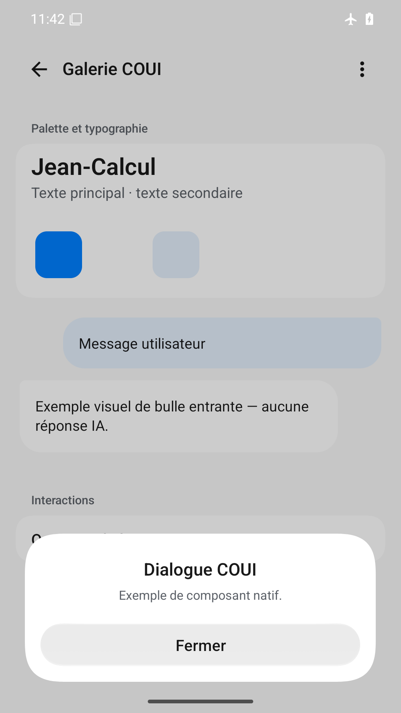
Dialogue au bas, titre/message/Fermer lisibles sur fond blanc ; voile de fond et barre système distincts, aucune action sous le geste système.
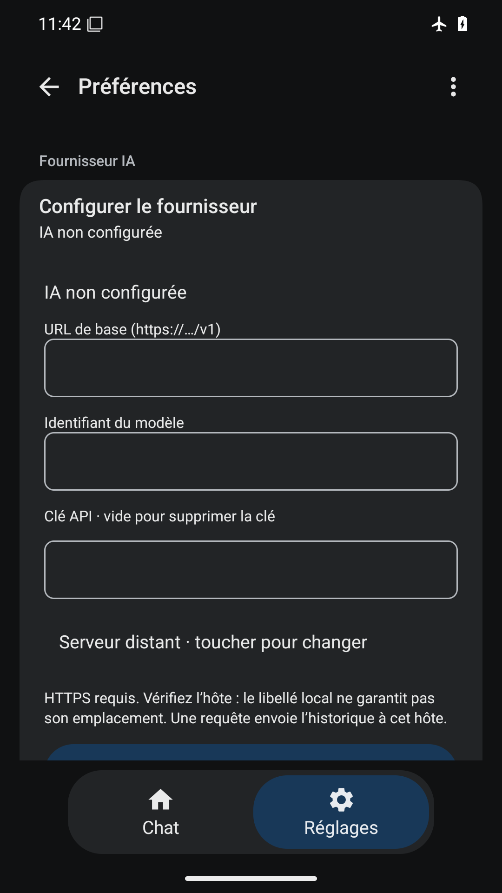
Correction visible : les trois champs vides sont bordés en gris clair sur surface sombre. Libellés et avertissement HTTPS lisibles ; suite et Enregistrer sous le pli non validés par ce PNG.
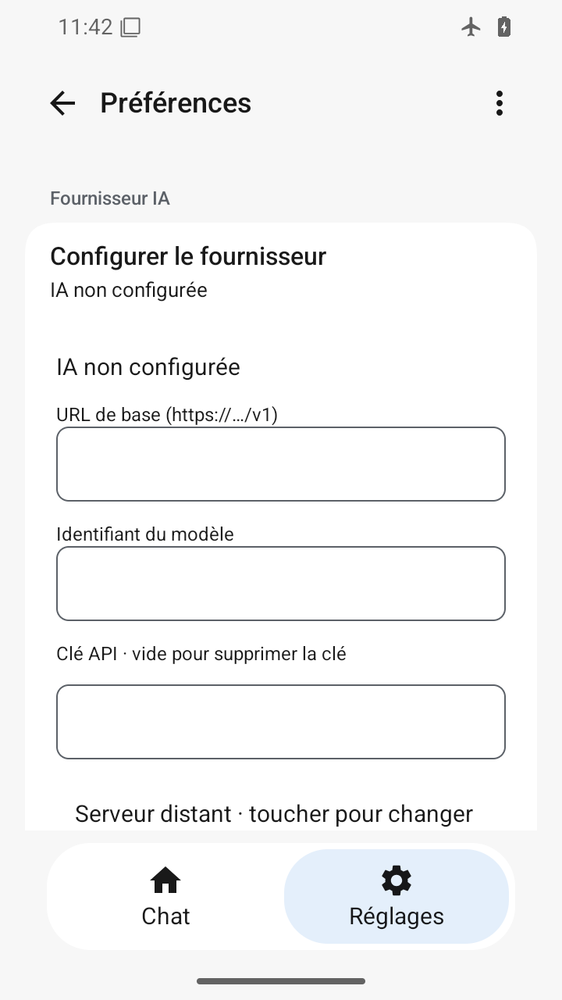
Correction visible en clair sur 360×640 : URL, modèle et clé ont des contours nets. Éléments visibles sans débordement horizontal ; bas de formulaire hors viewport défilable, non inspecté ici.
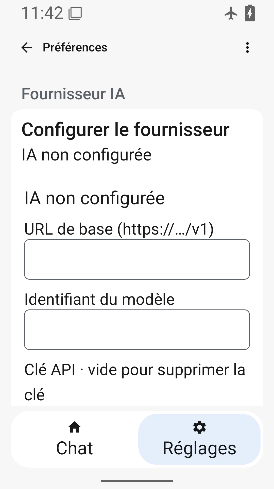
À 200 % les champs URL et modèle conservent des bordures visibles, les libellés se réorganisent sans se chevaucher. Le champ clé et la suite sont sous le pli ; leur affichage après défilement reste NOT_RUN.
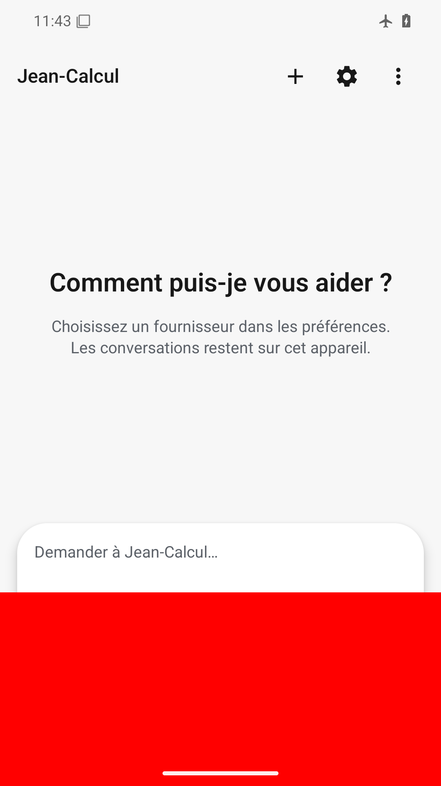
Défaut volontaire détecté : rectangle rouge opaque sur toute la largeur basse masque statut, envoi et navigation, et une partie de la capsule.